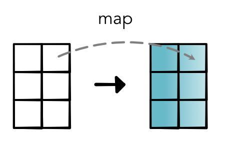
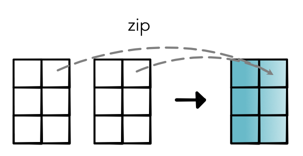
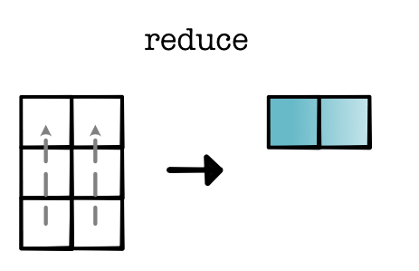
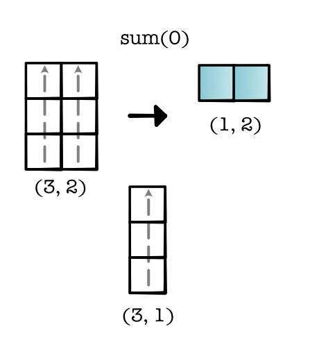
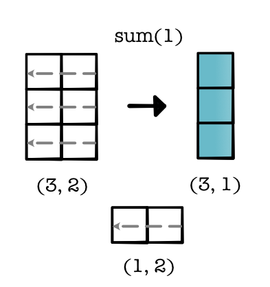
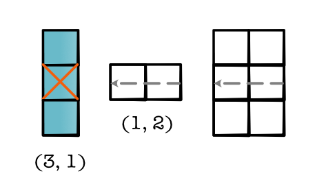
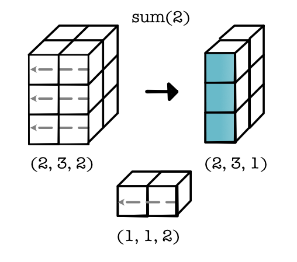

Module 2.3 - Gradients
Module 2.3 - Gradients
Gradients
Tensor Functions
Unary
new_tensor = tensor.log()Binary (for now, only same shape)
new_tensor = tensor1 + tensor2Reductions
new_tensor = tensor.sum()Tensor Ops
Map - Apply to all elements
Zip (same as zipWith) - Apply to all pairs
Reduce - Reduce a subset
Map
Zip
Reduce
Errata
Tasks
Bad Assert
Reduction
Reduction
Reduction
Reduction
Lecture
Outline
Gradients
Challenges
Review: Gradients
Terminology
Scalar -> Tensor
Derivative -> Gradient
d_out -> grad_out
Recommendation: Reason through gradients as many derivatives
Map Gradient

Zip Gradient

Reduce Gradient

Lecture Quiz
Gradients
Derivatives
Each tensor arg is many args
Returning tensor is like running several Functions
Result backward needs to run chain-rule for each arg and output.
Terminology
Scalar -> Tensor
Derivative -> Gradient
d_out -> grad_out
Recommendation: Reason through gradients as many derivatives
Map Gradient
Zip Gradient
Reduce Gradient